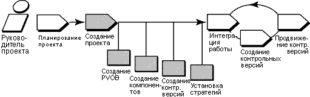

Обзор
На следующей диаграмме показан поток операций для управления проектами UCM. Затемненные области описаны в этой памятке.

Эта памятка по инструменту применима к Microsoft Windows. Она содержит описание функций, доступны в полной версии
ClearCase.
Терминология
Терминология в RUP и ClearCase слега отличается. Ниже приведено разъяснение связанной с инструментами
терминологии.
Этапы работы с инструментами
Для настройки проекта UCM:
-
Создайте хранилище для хранения сведений проекта
-
Создайте компоненты, содержащие набор файлов, над которыми трудятся разработчики.
-
Создайте контрольные версии, идентифицирующие версии файлов, с которым разработчики приступили к
работе
-
Создайте проект UCM
Для проектов ClearCase требуется VOB проекта (PVOB), использующийся для хранения объектов UCM и связанной информации.
-
Для запуска мастера создания VOB выберите на панели задач Windows кнопку Пуск > Программы > Rational
Software > Rational ClearCase > Администрирование > Создать VOB.
-
В первом открывшемся окне отметьте переключатель Данные проекта UCM.
-
Выберите Справку, содержащую рекомендации по выполнению мастера.
 Обратитесь к разделу
Мастер создания VOB электронной справки ClearCase для получения подробной информации. Обратитесь к разделу
Мастер создания VOB электронной справки ClearCase для получения подробной информации.
Компоненты используются для группировки набора связанных элементов каталогов и файлов в проекте UCM. Обычно разработка,
интеграция и выпуск элементов выполняется для элементов, составляющих компонент. Проект может содержать несколько
компонентов, о не меньше одного. Проекты могут иметь общие компоненты.
Создать компонент можно с помощью мастера создания VOB:
-
Нажмите кнопку Пуск > Программы > Администрирование Rational ClearCase > Создать VOB.
-
В первом шаге мастера отметьте переключатель Создать VOB как компонент UCM. Новый VOB может быть использован
проектами UCM в качестве компонента.
Также можно перенести существующие данные, хранящиеся в VOB, в проекты UCM, преобразовав существующие VOB в компоненты:
-
Перейдите к обозревателю проектов ClearCase Project Explorer. На панели инструментов Windows выберите Пуск >
Программы > Rational Software > Rational ClearCase > Обозреватель проектов.
-
Выберите корневой каталог PVOB.
-
Выберите Инструменты > Импортировать VOB. Откроется окно импорта VOB. В списке доступных VOB
выберите VOB для преобразования в компонент.
-
Для перемещения VOB в список VOB для импорта нажмите кнопку Добавить.
-
После завершения нажмите кнопку Импорт.
 См. раздел "Создание компонентов" в
руководстве ClearCase Управление проектами. См. раздел "Создание компонентов" в
руководстве ClearCase Управление проектами.
3. Создайте контрольные версии , идентифицирующие версии файлов, с которыми
разработчики приступили к работе.
Контрольные версии идентифицируют все элементы компонента, представляя стабильную исходную конфигурацию для начала
работы. Их применение необходимо для модели UCM для доступа к файлам и каталогам компонента.
При создании компонентов ClearCase с нуля, они создаются в исходной контрольной версии.
При преобразовании ClearCase VOB в компонент можно создать контрольные версии из существующих помеченных версий.
Проверьте, помечена ли последние стабильные версии. Если то не так, необходимо создать тип метки и применить его к
версиям, которые планируется добавить в проект.
Дополнительная информация
приведена в разделе Применение мастера добавления метки электронной справки ClearCase.
Для создания контрольной версии из набора версий, идентифицированных типом метки, выполните следующие действия:
-
В обозревателе проектов ClearCase выберите корневую папку PVOB. Выберите Инструменты > Импорт
меток. Появится мастер импорта меток.
-
В списке Доступные компоненты выберите компонент, содержащий метку, из которой требуется создать контрольную
версию.
-
Для перемещения компонента в список Выбранные компоненты нажмите кнопку Добавить.
-
Завершив, нажмите кнопку Далее.
-
В шаге 2 мастера импорта меток выберите тип метки для импорта. Введите имя контрольной версии, которую требуется
создать для версий, определенных данным типом метки. Выберите уровень продвижения контрольной версии. Нажмите
Готово.
В этой процедуре создается одна из контрольных версий основы проекта, идентифицирующая версии файлов, с которыми
разработчики приступили к работе.
Обратитесь к разделу
Создание и управление контрольными версиями электронной справки ClearCase.
После создания VOB проекта и компонентов, которыми вы будете пользоваться, можно приступать к созданию проекта UCM. Для
этого следует задать имя проекта и обозначить компоненты проекта и контрольные версии для проекта. ClearCase
предоставляет мастер создания нового проекта, облегчающий выполнение этой процедуры.
-
В обозревателе проектов ClearCase выберите корневую папку PVOB. Выберите во всплывающем меню пункт Создать
проект для запуска мастера.
-
Следуйте предложенным мастером инструкциям. для получения справки по любому действию нажмите кнопку Справка.
-
В шаге 3 мастера, добавление контрольных версий компонента для применения в данном проекте, укажите контрольные
версии, созданные в описанной ранее процедуре 3.
-
В последующих двух этапах мастера вас попросят ввести подробные сведения о конфигурации для проекта, включая
стратегии разработки и включение проекта для работы с базой данных запросов изменений Rational. Конфигурацию можно
настроить для определенных потребностей вашего проекта. Подробное описание всех доступных опций приведено в
электронной справке.
Обзор этой процедуры
приведен в следующих разделах электронной справки ClearCase:
-
Поток операция для создания проектов
-
Мастер создания проекта
|